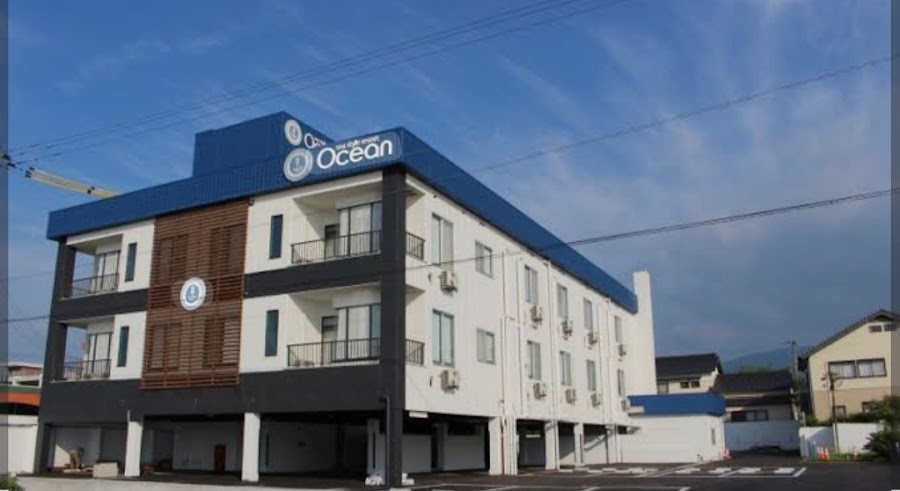
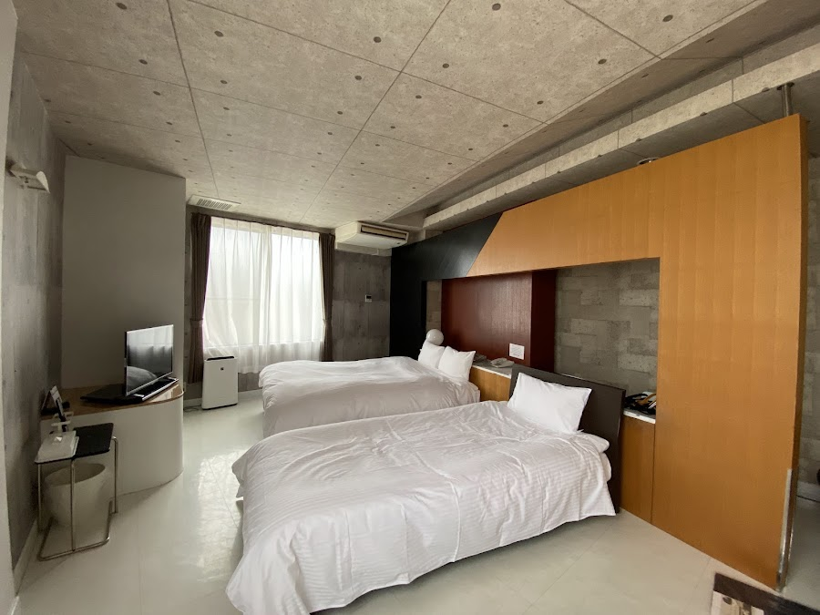
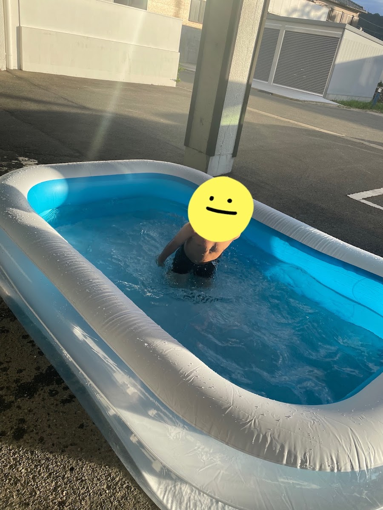
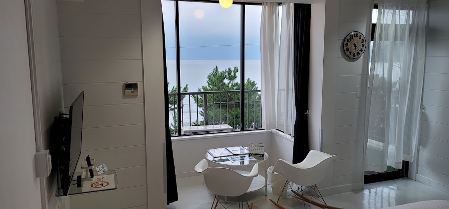
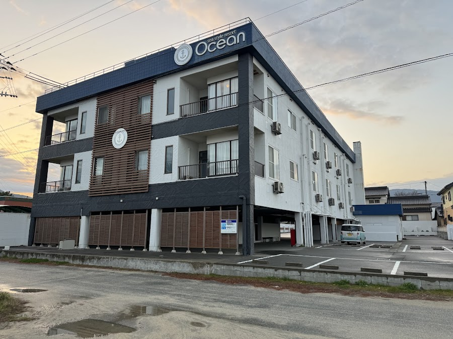

Tentative hotels (Booking.com)
Searched on Booking.com on 11 Oct 2026 for 2 adults and 1 child aged 11 in one room. Prices are Booking's total for the whole stay in SGD at search time (they will change). Each stop lists a few options, a recommended one first, and Booking search links for the whole area so you can look for others. Back to the itinerary.
How to read the features. "Hot spring bath" is Booking's explicit onsen tag. "Public bath" means a communal bath, which may or may not be a natural hot spring. "Laundry" is Booking's facility tag for laundry service or a coin laundry; none of the listings explicitly says "washing machine", so for the multi-night stays confirm the washer on the property page or by message. Booking found each of these as available for 3 guests, but check that the room is a true triple or has an extra bed. Parking is shown when Booking lists it (you have the car until 9 Dec).
<!-- confirmed-bookings:start -->
Confirmed bookings
Updated automatically by `mail_watcher.py` from Booking.com emails. A confirmed booking replaces the tentative options for its nights below.
| Check-in | Check-out | Nights | Hotel | Free cancellation until |
|---|---|---|---|---|
| 2026-12-02 | 2026-12-03 | 1 | Sea Style Resort OCEAN | check the booking |
| 2026-12-03 | 2026-12-04 | 1 | UNZIPPER KUMAMOTO - Private Sauna Stay | check the booking |
| 2026-12-04 | 2026-12-05 | 1 | Art Hotel Kagoshima | check the booking |
| 2026-12-05 | 2026-12-06 | 1 | VOYAGE Beautiful sunrise ocean view BEDROOM whole house, 2 rooms on 2nd floor, tatami room on 1st floor, &private garage | check the booking |
| 2026-12-06 | 2026-12-07 | 1 | 流星庵 Aso Well-being Villa | check the booking |
| 2026-12-07 | 2026-12-09 | 2 | GRAND BASE Beppu Ekihigashi | check the booking |
| 2026-12-09 | 2026-12-11 | 2 | A.T. Hotel Hakata | check the booking |
| 2026-12-11 | 2026-12-18 | 7 | 寧安居 | check the booking |
| 2026-12-18 | 2026-12-20 | 2 | the Moto Hotel Ueno III | check the booking |
| 2026-12-20 | 2026-12-21 | 1 | HOTEL MYSTAYS Hakodate Station | check the booking |
| 2026-12-21 | 2026-12-26 | 5 | Alpha Square Minami 5-jo Higashi | check the booking |
<!-- confirmed-bookings:end -->
Summary
| Night(s) | Recommended | Total (SGD) | Per night | Search Booking.com for the area |
|---|---|---|---|---|
| Wed 2 Dec: Karatsu | Booked: Sea Style Resort OCEAN | booked | booked | booked |
| Thu 3 Dec: Kumamoto | Booked: UNZIPPER KUMAMOTO - Private Sauna Stay | 32,269 | 32,269 | booked |
| Fri 4 Dec: Kagoshima | Booked: Art Hotel Kagoshima | 20,630 | 20,630 | booked |
| Sat 5 Dec: Nobeoka | Booked: VOYAGE Beautiful sunrise ocean view BEDROOM whole house, 2 rooms on 2nd floor, tatami room on 1st floor, &private garage | 16,500 | 16,500 | booked |
| Sun 6 Dec: Aso (Uchinomaki Onsen area) | Booked: 流星庵 Aso Well-being Villa | 44,954 | 44,954 | booked |
| Mon 7 and Tue 8 Dec: Beppu (2 nights, washing machine wanted) | Booked: GRAND BASE Beppu Ekihigashi | booked | booked | booked |
| Wed 9 and Thu 10 Dec: Hakata, Fukuoka (2 nights, washing machine wanted) | Booked: A.T. Hotel Hakata | 53,222 | 26,611 | booked |
| Fri 11 to Thu 17 Dec: Osaka (7 nights, washing machine wanted) | Booked: 寧安居 | 76,303 | 10,900 | booked |
| Fri 18 and Sat 19 Dec: Tokyo, Ueno (2 nights, washing machine wanted) | Booked: the Moto Hotel Ueno III | 73,300 | 36,650 | booked |
| Sun 20 Dec: Hakodate (1 night) | Booked: HOTEL MYSTAYS Hakodate Station | 13,720 | 13,720 | booked |
| Mon 21 to Fri 25 Dec: Sapporo (5 nights, washing machine wanted) | Booked: Alpha Square Minami 5-jo Higashi | 141,967 | 28,393 | booked |
Indicative total for all 24 nights: about S$472,865 (booked nights at the booked price where it is known, the recommended pick for the rest); 24 of 24 nights booked.
Wed 2 Dec: Karatsu
Booked: Sea Style Resort OCEAN (1 night: check-in 2026-12-02, check-out 2026-12-03).
1799-45 Hamatamamachi Hamasaki, Karatsu, Saga 849-5131, Japan (Google Maps)
Open this hotel on Booking.com (the property page with its own room photos, rates and policies)
| Feature | What the listing says |
|---|---|
| Microwave | Yes |
| Refrigerator | Yes |
| Bath | Private bathroom with shower |
| Bathtub | Yes, in some rooms |
| Swimming pool | Not mentioned |
| Car park | Free, on site |
| Sauna | Not mentioned (no public bath listed) |
| Breakfast | Not mentioned |
| Washing machine | Not mentioned |
| Laundry | Not mentioned |
| Stove | Shared kitchen (no stove listed in the rooms) |
| View | Sea and mountain views in some rooms |
Rooms: Twin and double rooms of 30 to 40 m2; a twin room sleeps 3, which fits the party. Sea-view rooms exist: check which room type was booked.
Source: Booking.com listing, read 17 Oct 2026; Google Maps for the photos. Facilities can change: confirm anything you rely on with the hotel.





Photos by Google Maps contributors (rooms, building and views); the Booking.com page above has the official room photos.
This booking replaces the tentative options that were listed here.
Interactive map: convenience stores, parks, restaurants that match the food preferences (Google search matches: check the menu) and, for hotels used on car days, petrol stations. Radius 3 km on car days, 1 km otherwise; distances are straight-line.
Thu 3 Dec: Kumamoto
Booked: UNZIPPER KUMAMOTO - Private Sauna Stay (1 night: check-in 2026-12-03, check-out 2026-12-04).
Price on the booking: ¥32,269.
1 Koyaimamachi, Chuo Ward, Kumamoto, 860-0012, Japan (Google Maps)
This booking replaces the tentative options that were listed here.
Interactive map: convenience stores, parks, restaurants that match the food preferences (Google search matches: check the menu) and, for hotels used on car days, petrol stations. Radius 3 km on car days, 1 km otherwise; distances are straight-line.
Fri 4 Dec: Kagoshima
Booked: Art Hotel Kagoshima (1 night: check-in 2026-12-04, check-out 2026-12-05).
Price on the booking: ¥20,630.
22-1 Kamoikeshinmachi, Kagoshima, 県 Kagoshima 890-0064, Japan (Google Maps)
This booking replaces the tentative options that were listed here.
Interactive map: convenience stores, parks, restaurants that match the food preferences (Google search matches: check the menu) and, for hotels used on car days, petrol stations. Radius 3 km on car days, 1 km otherwise; distances are straight-line.
Sat 5 Dec: Nobeoka
Booked: VOYAGE Beautiful sunrise ocean view BEDROOM whole house, 2 rooms on 2nd floor, tatami room on 1st floor, &private garage (1 night: check-in 2026-12-05, check-out 2026-12-06).
Price on the booking: ¥16,500.
Mimitsumachi, Hyuga, Miyazaki 889-1111, Japan (Google Maps)
This booking replaces the tentative options that were listed here.
Interactive map: convenience stores, parks, restaurants that match the food preferences (Google search matches: check the menu) and, for hotels used on car days, petrol stations. Radius 3 km on car days, 1 km otherwise; distances are straight-line.
Sun 6 Dec: Aso (Uchinomaki Onsen area)
Booked: 流星庵 Aso Well-being Villa (1 night: check-in 2026-12-06, check-out 2026-12-07).
Price on the booking: ¥44,954.
Manganji, Minamioguni, Aso District, Kumamoto 869-2402, Japan (Google Maps)
This booking replaces the tentative options that were listed here.
Interactive map: convenience stores, parks, restaurants that match the food preferences (Google search matches: check the menu) and, for hotels used on car days, petrol stations. Radius 3 km on car days, 1 km otherwise; distances are straight-line.
Mon 7 and Tue 8 Dec: Beppu (2 nights, washing machine wanted)
Booked: GRAND BASE Beppu Ekihigashi (2 nights: check-in 2026-12-07, check-out 2026-12-09).
4-21 Kitamatogahamachō, Beppu, Oita 874-0928, Japan (Google Maps)
This booking replaces the tentative options that were listed here.
Interactive map: convenience stores, parks, restaurants that match the food preferences (Google search matches: check the menu) and, for hotels used on car days, petrol stations. Radius 3 km on car days, 1 km otherwise; distances are straight-line.
Wed 9 and Thu 10 Dec: Hakata, Fukuoka (2 nights, washing machine wanted)
Booked: A.T. Hotel Hakata (2 nights: check-in 2026-12-09, check-out 2026-12-11).
Price on the booking: ¥53,222.
5-chōme-26-18 Hakataekiminami, Hakata Ward, Fukuoka, 812-0016, Japan (Google Maps)
This booking replaces the tentative options that were listed here.
Interactive map: convenience stores, parks, restaurants that match the food preferences (Google search matches: check the menu) and, for hotels used on car days, petrol stations. Radius 3 km on car days, 1 km otherwise; distances are straight-line.
Fri 11 to Thu 17 Dec: Osaka (7 nights, washing machine wanted)
Booked: 寧安居 (7 nights: check-in 2026-12-11, check-out 2026-12-18).
Price on the booking: ¥76,303.
3 Chome-16 Shimodera, Naniwa Ward, Osaka, 556-0001, Japan (Google Maps)
This booking replaces the tentative options that were listed here.

Interactive map: convenience stores, parks, restaurants that match the food preferences (Google search matches: check the menu) and, for hotels used on car days, petrol stations. Radius 3 km on car days, 1 km otherwise; distances are straight-line.
Fri 18 and Sat 19 Dec: Tokyo, Ueno (2 nights, washing machine wanted)
Booked: the Moto Hotel Ueno III (2 nights: check-in 2026-12-18, check-out 2026-12-20).
Price on the booking: ¥73,300.
6-chōme-23-6 Higashiueno, Taito City, Tokyo 110-0015, Japan (Google Maps)
This booking replaces the tentative options that were listed here.
Interactive map: convenience stores, parks, restaurants that match the food preferences (Google search matches: check the menu) and, for hotels used on car days, petrol stations. Radius 3 km on car days, 1 km otherwise; distances are straight-line.
Sun 20 Dec: Hakodate (1 night)
Booked: HOTEL MYSTAYS Hakodate Station (1 night: check-in 2026-12-20, check-out 2026-12-21).
Price on the booking: ¥13,720.
20-11 Wakamatsuchō, Hakodate, Hokkaido 040-0063, Japan (Google Maps)
This booking replaces the tentative options that were listed here.
Interactive map: convenience stores, parks, restaurants that match the food preferences (Google search matches: check the menu) and, for hotels used on car days, petrol stations. Radius 3 km on car days, 1 km otherwise; distances are straight-line.
Mon 21 to Fri 25 Dec: Sapporo (5 nights, washing machine wanted)
Booked: Alpha Square Minami 5-jo Higashi (5 nights: check-in 2026-12-21, check-out 2026-12-26).
Price on the booking: ¥141,967.
Japan, 〒060-0055 Hokkaido, Sapporo, Chuo Ward, Minami 5 Jōhigashi, 2-chōme−１６−1 (Google Maps)
This booking replaces the tentative options that were listed here.
Interactive map: convenience stores, parks, restaurants that match the food preferences (Google search matches: check the menu) and, for hotels used on car days, petrol stations. Radius 3 km on car days, 1 km otherwise; distances are straight-line.